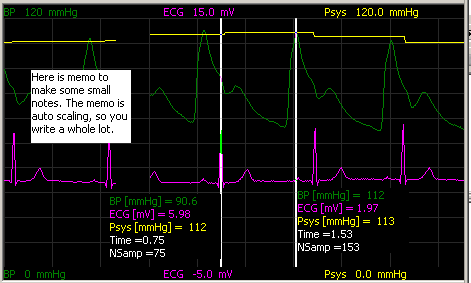
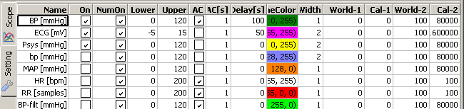

ScopePlot  (march 2008)
(march 2008)
Application Designer / Domain Expert / Control Designer / Core Developer
Introduction
This is an interactive display, special designed for realtime display and control. Some or all of the recorded signals can be shown in the main signal window. Settings of the signals can be done through the labels on top and bottom, with the speed-buttons on the left and through an extensive grid on the second page. On the bottom you see an history window where one of the signals can be displayed in min/max mode for the total recording (auto compression). This window can also be used to look back in time, while recording continuous. Although not strictly necessary, this control will often be the only control in a brick.
The picture shows a realtime ECG and bloodpressure signal with online analysis of the bloodpressure (yellow line is the calculated Systolic Pressure). Each signal can be delayed to compensate for realtime filter delays. During freeze, 2 measurement cursors are available.

The main parts of the scope display:
In general a brick will only contains this control, in which case it might look like this:
The brick has a number of inputs, each can handle multipe vectors and one control output (callback), that can be used to start / stop an AD-converter.

Main Graph Display
The main graph display is used to show either the actual signals or some part of the already recorded signals. Scaling and shigting can be done in numerous ways: clicking bottom / top labels, speed-buttons and extended settings. In the extended settings you can also change the delay of an individual signal, AC/DC setting, colors etc. In freeze mode you can popup 2 measurement cursors for detailed measurement. Through the RM-menu a memo can be popped up, to make some notes in case you want to save the total image. The memo is placed at the position of the cursor and can be toggled (and thus moved) through the RM-menu.

History Graph
The history graph can display 1 signal over the whole recording session in strip-chart mode (all samples are shown). The amplitude is automatically scaled according to some mean/SD algorithm, with auto compression on the time base. Depending on the type of signal you choose, it might be a valuable way to get an overall view of the experiment, in generel you will be able to see special events during the session.
Clicking into this window will show the history (if recorded) in the main graph menu.
In playback mode the history graph can used to cut some parts from the recording.
Numerical Display
This part shows the actual values of the selected signals (refresh rate half second)
Speed Buttons
By either clicking on a numerical signal label or by clicking on the top or bottom label in the main graph window, the signal is selected to be handled by the speed buttons.
|
stop AD converter (or recording) start AD converter |
|
|
increase the gain of the selected signal with a factor 2 decrease the gain of the selected signal with a factor 2 |
|
|
shift the selected signal half a screen up shift the selected signal half a screen down |
|
|
change the color of the selected signal the selected signal |
Extended Settings
In the extended settings panel, all the details of the graphical and numerical display can be changed.

|
name |
The name of the signal and the units in which it is measured. The units must be specified in square brackets. if no signal name is available, the signal will not be displayed. |
|
On |
Select, to show the signal in the main graph window |
|
NumOn |
Select, to show the signal in the numerical window |
|
Lower |
The lower border value (in world coordinates) in the main graph window |
|
Upper |
The upper border value (in world coordinates) in the main graph window. |
|
AC |
Select, if the signal should be drawn in AC-mode in the main graph window |
|
AC[s] |
The time constant of the AC-setting |
|
Delay[s] |
The delay of the signal in the main graph window. If you're using real-time filters (which always will have a time delay), you can also delay the original signal synchronous. |
|
LineColor |
The color of the signal in both main graph window and numerical window. |
|
LineWidth |
The linewidth in the main graph window |
|
World-1 |
For 2-point calibration, the world value which will correspond to the AD-value "Cal-1" |
|
Cal-1 |
AD-value for world value World-1 |
|
World-2 |
For 2-point calibration, the world value which will correspond to the AD-value "Cal-2" |
|
Cal-2 |
AD-value for world value World-2 |